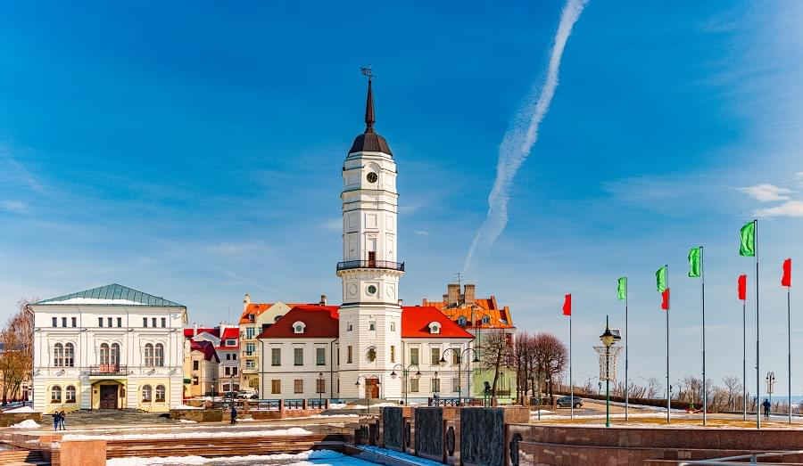
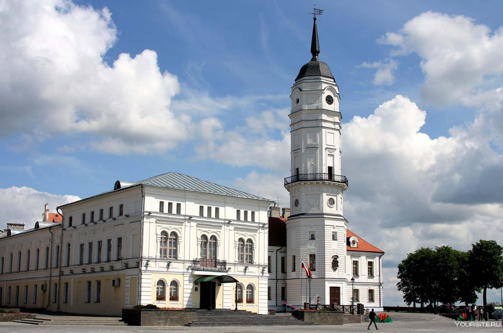

Достопримечательности
В самом городе и окрестностях достаточно большое количество достопримечательностей, и ко всем из них жители
города относятся с уважением и вниманием. Среди наиболее известных объектов:
Городская Ратуша. Ее часто изображают на открытках и других сувенирах. Старое здание было разобрано, а в 2008
году была построена точная копия старой ратуши. Находится на улице Ленинской, 1а.
Мемориал «Буйничское поле». Построен в 7 км от города. В этом месте в начале войны проходили ожесточенные бои.
Экспозиция мемориала посвящена памяти защитников Могилева, принявших участие в обороне города. В центре
комплекса построен храм, рядом находится выставка военной техники. Одна их аллей мемориала носит имя писателя
Константина Симонова. Здесь же, за храмом, находится озеро Слез.
Площадь Звезд. Центральная композиция площади – «Звездочет». Вокруг памятника выложена местная «Аллея Славы»,
каждой звезде присвоено имя одного из почетных жителей города.
Полыковичская криница. Расположенный рядом с деревней Полыковичи источник знаменит своей целебной силой. Здесь
же построена церковь в честь святой мученицы Параскевы.
Зоосад. Находится около деревни Буйничи. Это – научно-практическая база подготовки будущих егерей и не совсем
заапарк. Животные здесь разгуливают на свободе, в естественной среде. В зоосаде работает лечебница для больных и
раненых зверей. Посетителям предлагают особый вид прогулки – «Сафари» на паровозике.
Свято-Никольский монастырь. Построен в форме креста, на фасаде здания расположены фрески в несколько рядов.
Собор увенчан черным куполом, что дает запоминающееся сочетание с белоснежными стенами.
Собор трех Святителей. Считается самым красивым православным храмом в Могилеве. Знаменит тем, что во времена
Первой мировой войны его неоднократно посещал император Николай II.
Католический собор Успения Девы Марии и Святого Станислава. Был построен в 1752 году по приказу польского
короля, а в 1789 году по приказу Екатерины II здание было передано католической общине. Сегодня собор
действующий. Кроме богослужений, здесь проводят концерты органной музыки.
Дом Советов. Представляет собой яркий образец советской архитектуры. Монументальное здание состоит из нескольких
симметрично расположенных корпусов.

3 главных музея
В Могилеве не так много музеев. После Великой Отечественной войны экспозиции частично или полностью пришлось
создавать заново.
Могилевский областной краеведческий музей. Расположен на площади Славы. Старейший музей города, был открыт в
1887 году. До 1941 года в музее хранились предметы исторического наследия – иконы, картины, старинные печатные
изделия. Также в экспозиции были представлены предметы из драгоценных металлов и камней, оружие. В Музее
находился уникальный экспонат – крест Ефросиньи Полоцкой, который вместе с другими экспонатами исчез во время
Великой Отечественной войны. Сейчас фонды музея насчитывают более 300 тысяч предметов, а экспозиции представлены
отделами «Природа», «Археология», «Досоветское время», «Советская эпоха».
Музей истории Могилева. Находится на улице Ленинской, дом 1а. Был открыт в 1992 году в здании архиерейского
дворца, сейчас находится в новой городской Ратуше. Музей посвящен истории Могилева в период с X по начало XXI
века. В Выставочном зале музея проводят тематические мероприятия, конференции, выставки.
Художественный музей Бялыницкого – Бирули. Экспозиция посвящена живописцу В. К. Бялыницкому – Бирули. В музее
хранятся около 500 работ художника, а также его личные вещи – этюдник, палитра, кисти, антикварная мебель,
ружье. Одни из наиболее ценных экспонатов – письма И. Репина, в которых он восторгался талантом молодого
художника.
Туристический центр
Исторический центр и самая тусовочная улица города – Ленинская, она же в прошлом Ветряная, Большая Садовая,
Инженерная. Свое нынешнее название носит с 1919 года. Пешеходной улица стала с 2004 года, и с тех пор активно
обустраивается. Здесь расположены жилые и общественные здания постройки XXVIII – XX веков, новые стилизованные
кофейни, кафе, пиццерии. Улица постоянно реконструируется и сейчас – это любимое место горожан и туристов. Здесь
регулярно проходят тематические спектакли, вернисажи, концерты, реконструкции исторических событий. На прогулке
можно приобрести изделия местных мастеров – народные куклы, поделки из соломки и традиционные сувениры.
Протяженность улицы 1,5 километра.
